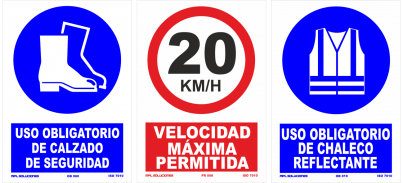

<!-- We don't need a full layout in this file because this page will be parsed with Ajax. -->


<div class="pages">
    <div data-page="condiciones" class="page">
        <div class="page-content">
            <div class="content-block" style ="margin:8%">
                <p class="text-align-center"><strong>NORMAS BÁSICAS DE SEGURIDAD:</strong></p>

                <p>EL FIRMANTE reconoce y/o se compromente:</p>
                <ol class="text-align-justify">
                    <li><strong>HABER SIDO INFORMADO</strong> acerca de los riesgos de la instalacion a la accede y estar informado de las normas de seguridad de obligatorio cumplimiento en éstas</li>
                    <br>
                    <li><strong>HABER RECIBIDO INDFORMACIÓN</strong> acerca de las medidas de emergencia o plan de autoprotección de la instalacion en caso de emergencia y/evacuación de ésta.</li><br>

                    <li><strong>HABER SIDO INFORMADO</strong> acerca de las 10 REGLAS QUE SALVAN y el obligado complimiento de las mismas.</li>
                </ol>

                <br><hr><br>
                <p><strong>Mientras permanezca en la instalación:</strong></p>

                <ol class="text-align-justify">
                    <li>Siga en todo momento las indicaciones del personal de la instalación en materia de seguridad.</li><br>

                    <li>No entre en los edificios o zonas de la instalación para las no ha sido autorizado por parte del responsable o personal de la planta ( riesgo de presencia de gases, microorganismos infeccioso, caidas a distinto nivel,...)                  
                    </li><br>

                    <li>Respete siempre la señalización de seguridad</li><br>
                    <li>Circule con precaución siempre por las zonas de paso o vias de circulación. Atención tambien circulan vehiculos.</li><br>
                    <li>No manipule ningún equipo, maquinaria, instalación, herramienta o meterial de la planta si no ha sido autorizado.</li><br>
                    <li>Esta totalmente prohibido el acceso a cualquier espacio señalizado como <strong>ESPACIO CONFINADO</strong> ( para acceder es obligatorio disponer de un permiso de trabajo de los responsables de planta). El acceso a los bombeos se realizará con presencia del prosonal de planta.</li><br>
                    <li>Solo se podra comer, beber y/o fumar en las zonas de la planta habilitadas para tal efecto. </li><br>
                    <li>En caso de incendio, vertido de producto químico o residuo u otra emergencia, avise inmediatamente al personal de la planta y siga sus instrucciones</li><br>

                    <li> En caso de transportista, disponer y facilitar al personal de referencia en la instalación la documentación de carga, asi como de otra informacion de relevancia relativa a la misma cmo la ficha de datos de Seguridad de Producto quimico, carta de porte, etc.
                    Ademas, con independencia de la carga sumistrada, el transportista tambien facilitará al personal de la instalacion el albarán relativo a la carga entregada.</li><br>

                    <li>En caso de accidentarse un trabajador, póngase en contacto con el responsable de la instalación, y siga sus instrucciones.</li>

                   
                </ol>
                
                <br><hr><br>

                    
                    <!-- style="width:100%; height:auto" -->

                 <br><br><hr><br>
                
                <a href="#" class="back link button button-fill button-raised button-fill">
                <i class="icon icon-back"></i>
                <span>VOLVER</span>
            </a>

            </div>
        </div>
    </div>
</div>
